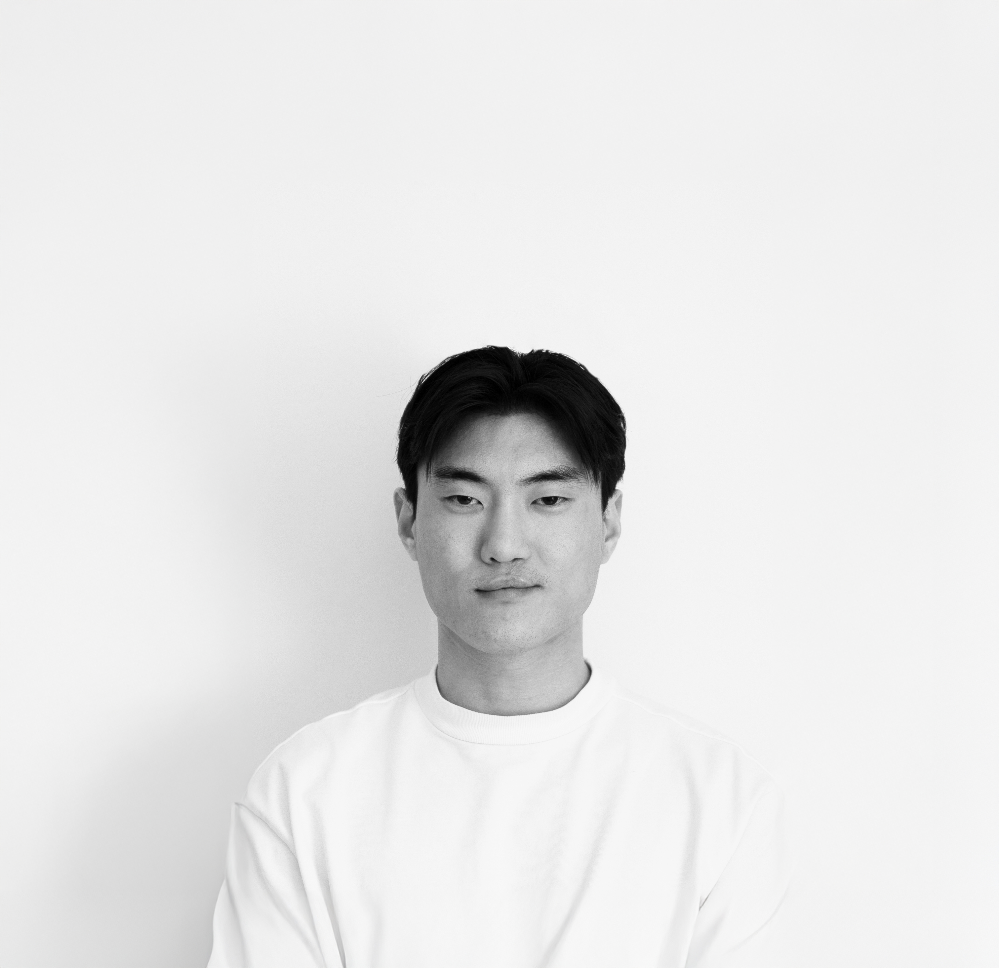

Portfolio Website
Hey, I'm Ola Jin.
I studied architecture in Prague — five years of learning how to think about space, people, and why cities feel the way they do. It gave me more than a degree. It gave me a way of seeing the world.
Somewhere along the way, I realised I wanted to make things differently. The job market didn't help, but honestly — a year of sitting with myself did more. I came out the other side wanting to build in a new medium.
Code feels like digital DNA to me. The same logic, the same obsession with how pieces fit together — just a different material.
I'm currently a student, figuring it out one project at a time. If you're building something interesting, feel free to reach out.
